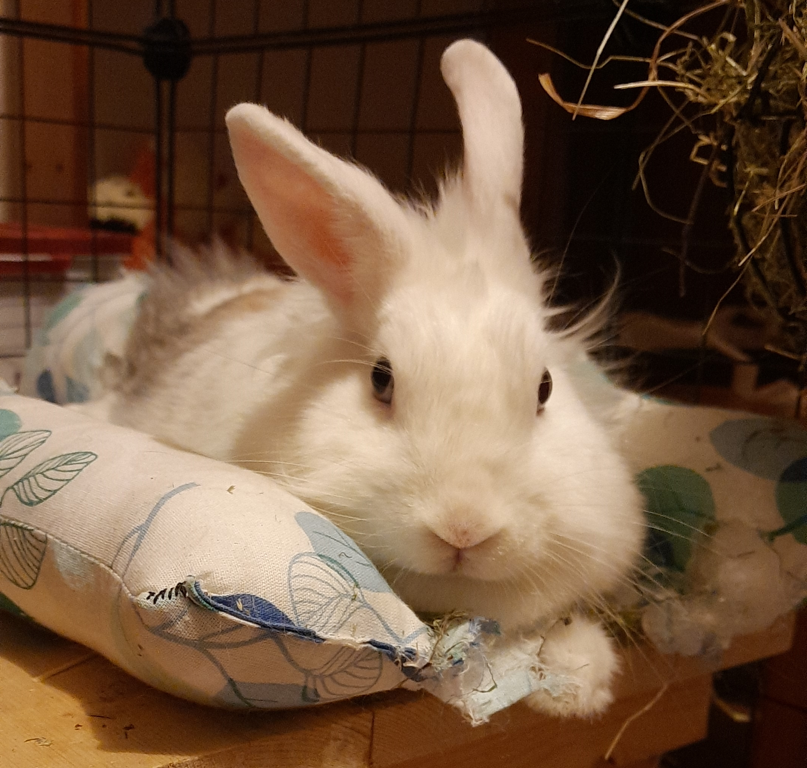

По заданию написать про любимого кота, а у меня заяц :)
Просто страничка о зайце. У вас есть кролик? А у меня есть! Так что же значит иметь кролика?
Иметь кролика это -

- Перегрызенные провода. Иногда в неожиданных местах. И только ноль, фазу не трогает.
- Скрутки на всех проводах и изолента. Даже на витой паре. Я многому научилась, мне нужен был интернет.
- Неожиданные корма (трава, ветки, зерно... провода)
- Отсутствие в меню крольчатины. Никогда! Никакой! У нас же кролик, для него это будет стресс!
- Это цветы, подстриженные снизу как по линейке. Ест все!
- Сено и солома в квартире
- Это умиление и радость от милоты варежки на ногах и с носом.